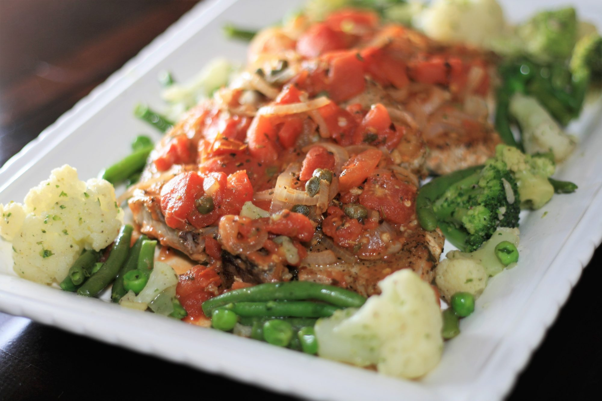

These Italian-style pork chops include lots of onion, garlic, tomatoes, and savory herbs. This quick and easy recipe is a great topping for pasta or smashed potatoes.
Ingredients
- 4 large pork chops
- salt and ground black pepper to taste
- 1 large onions, halved and sliced
- 8 large garlic, minced
- 2 (14.5 ounce) cans whole tomatoes
- 3 tablespoons capers, with liquid
- 1 tablespoon dried rosemary
- 2 teaspoons red pepper flakes
- ½ tablespoon dried oregano
- ½ tablespoon dried basil
Steps
- Heat a large heavy skillet over medium-high heat. Season pork chops with salt and black pepper on both sides and add to skillet. Brown pork chops, about 4 minutes per side. Transfer to a plate and cover with aluminum foil.
- Add onions and garlic to the hot skillet. Cook and stir until softened but still crisp, about 5 minutes. Add tomatoes, capers and liquid, rosemary, red pepper flakes, oregano, and basil. Bring sauce to a simmer and cook about 5 minutes to meld flavors.
- Pour any accumulated juices from the plate with the pork chops into the sauce in the skillet and stir. Add cooked pork chops and cover with sauce. Simmer until warmed through, about 5 minutes more.
Return to top
Return to recipes